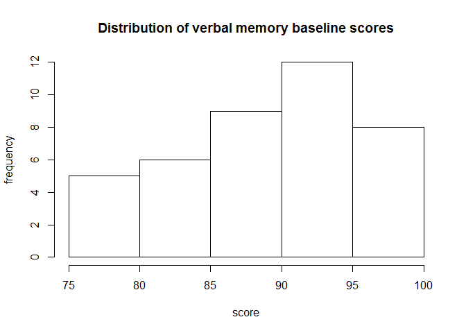
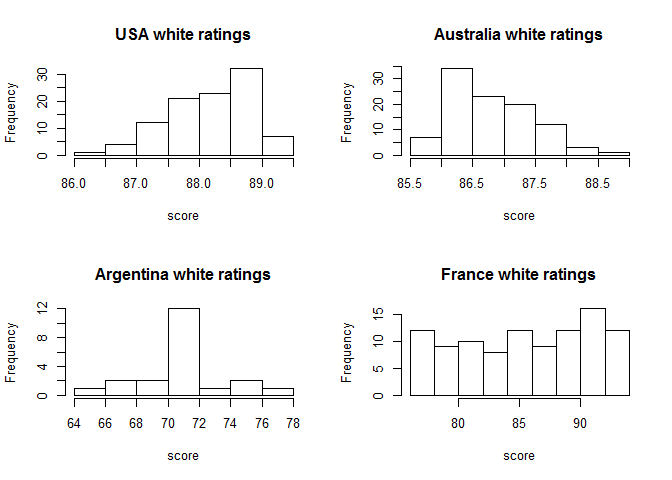
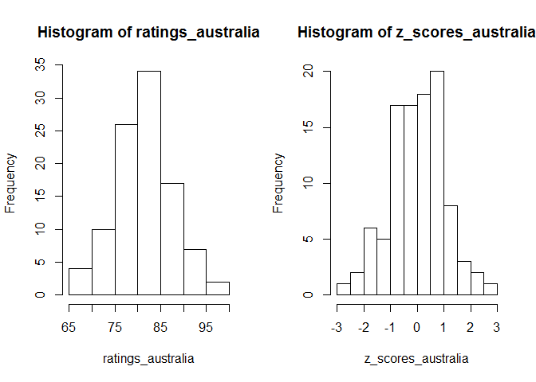
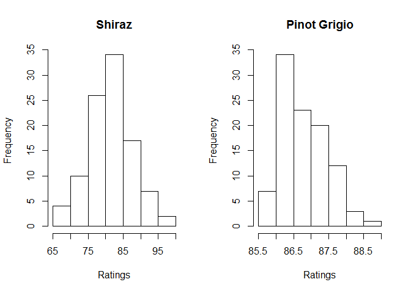
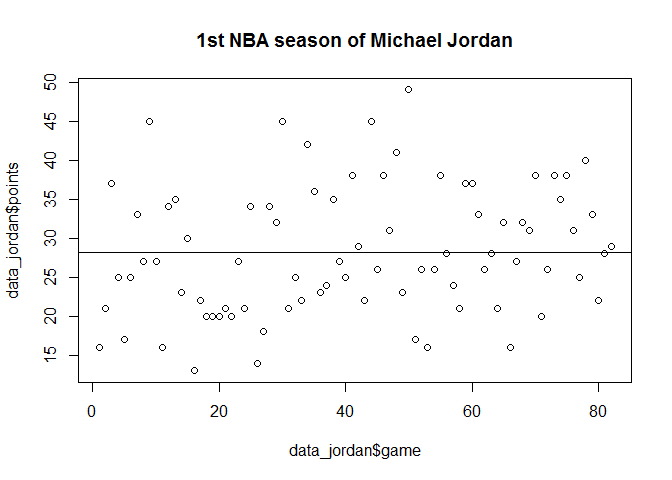

- 1, Variables
- 2, Histograms and Distributions
- 3, Scales of Measurement
- 4, Measures of Central Tendency
- 5, Measures of Variability
Foreword
- Output options: the ‘tango’ syntax and the ‘readable’ theme.
- Snippets and results.
1, Variables¶
Nominal variables in R
# Create a numeric vector with the identifiers of the participants of your survey
participants_1 <- c(2, 3, 5, 7, 11, 13, 17)
# Check what type of values R thinks the vector consists of
class(participants_1)
## [1] "numeric"
# Transform the numeric vector to a factor vector
participants_2 <- factor(participants_1)
# Check what type of values R thinks the vector consists of now
class(participants_2)
## [1] "factor"
Ordinal variables in R
# Create a vector of temperature observations
temperature_vector <- c('High', 'Low', 'High', 'Low', 'Medium')
temperature_vector
## [1] "High" "Low" "High" "Low" "Medium"
# Specify that they are ordinal variables with the given levels
factor_temperature_vector <- factor(temperature_vector, order = TRUE, levels = c('Low', 'Medium', 'High'))
factor_temperature_vector
## [1] High Low High Low Medium
## Levels: Low < Medium < High
Interval and Ratio variables in R
# Assign to the variable 'longitudes' a vector with the longitudes
# This is an interval variable.
longitudes <- c(10, 20, 30, 40)
# Assign the times it takes for an athlete to run 100 meters to the variable 'chronos'
# This is a ratio variable.
chronos <- c(10.60, 10.12, 9.58, 11.1)
2, Histograms and Distributions¶
Creating histograms in R
library(XLConnectJars)
library(XLConnect)
# Read in the data set and assign to the object
impact <- readWorksheetFromFile('A Hands-on Introduction to Statistics with R.xls', sheet = 'impact', header = TRUE, startCol = 1, startRow = 1)
# This will print the data set in the console
head(impact)
## subject condition verbal_memory_baseline visual_memory_baseline
## 1 1 control 95 88
## 2 2 control 90 82
## 3 3 control 87 77
## 4 4 control 84 72
## 5 5 control 92 77
## 6 6 control 89 79
## visual.motor_speed_baseline reaction_time_baseline
## 1 35.29 0.42
## 2 31.47 0.63
## 3 30.87 0.56
## 4 41.87 0.66
## 5 33.28 0.56
## 6 40.73 0.81
## impulse_control_baseline total_symptom_baseline verbal_memory_retest
## 1 11 0 97
## 2 7 0 86
## 3 8 0 90
## 4 7 0 85
## 5 7 1 87
## 6 6 0 91
## visual_memory_retest visual.motor_speed_retest reaction_time_retest
## 1 86 35.61 0.65
## 2 80 37.01 0.49
## 3 79 20.15 0.75
## 4 70 33.26 0.19
## 5 77 28.34 0.59
## 6 85 33.47 0.48
## impulse_control_retest total_symptom_retest
## 1 10 0
## 2 7 0
## 3 9 0
## 4 8 0
## 5 8 1
## 6 5 0
# Use the describe() function to see some summary information per variable
#describe(impact)
summary(impact)
## subject condition verbal_memory_baseline
## Min. : 1.00 Length:40 Min. :75.00
## 1st Qu.:10.75 Class :character 1st Qu.:85.00
## Median :20.50 Mode :character Median :91.00
## Mean :20.50 Mean :89.75
## 3rd Qu.:30.25 3rd Qu.:95.00
## Max. :40.00 Max. :98.00
## visual_memory_baseline visual.motor_speed_baseline reaction_time_baseline
## Min. :59.00 Min. :26.29 Min. :0.4200
## 1st Qu.:68.75 1st Qu.:31.59 1st Qu.:0.5675
## Median :75.00 Median :33.50 Median :0.6500
## Mean :74.88 Mean :34.03 Mean :0.6670
## 3rd Qu.:81.25 3rd Qu.:36.44 3rd Qu.:0.7325
## Max. :91.00 Max. :41.87 Max. :1.2000
## impulse_control_baseline total_symptom_baseline verbal_memory_retest
## Min. : 2.000 Min. :0.00 Min. :59
## 1st Qu.: 7.000 1st Qu.:0.00 1st Qu.:74
## Median : 8.500 Median :0.00 Median :85
## Mean : 8.275 Mean :0.05 Mean :82
## 3rd Qu.:10.000 3rd Qu.:0.00 3rd Qu.:91
## Max. :12.000 Max. :1.00 Max. :97
## visual_memory_retest visual.motor_speed_retest reaction_time_retest
## Min. :54.00 Min. :20.15 Min. :0.1900
## 1st Qu.:66.75 1st Qu.:30.33 1st Qu.:0.5575
## Median :72.00 Median :35.15 Median :0.6500
## Mean :71.90 Mean :35.83 Mean :0.6730
## 3rd Qu.:79.00 3rd Qu.:39.41 3rd Qu.:0.7325
## Max. :86.00 Max. :60.77 Max. :1.3000
## impulse_control_retest total_symptom_retest
## Min. : 1.00 Min. : 0.00
## 1st Qu.: 5.00 1st Qu.: 0.00
## Median : 7.00 Median : 7.00
## Mean : 6.75 Mean :13.88
## 3rd Qu.: 9.00 3rd Qu.:27.00
## Max. :12.00 Max. :43.00
# Select the variable 'verbal_memory_baseline' from the 'impact' data.frame and assign it to the variable 'verbal_baseline'
verbal_baseline <- impact$verbal_memory_baseline
verbal_baseline
## [1] 95 90 87 84 92 89 78 97 93 90 89 97 79 86 85 85 98 95 96 92 79 85 97
## [24] 89 75 75 84 93 88 97 93 96 84 89 95 95 97 95 92 95
# Plot a histogram of the verbal_baseline variable that you have just created
hist(verbal_baseline, main = 'Distribution of verbal memory baseline scores', xlab = 'score', ylab = 'frequency')

Let us go wine tasting (red wine)
# Read in the data set and assign to the object
red_wine_data <- readWorksheetFromFile('A Hands-on Introduction to Statistics with R.xls', sheet = 'red_wine_data', header = TRUE, startCol = 1, startRow = 1)
# This will print the data set in the console
head(red_wine_data)
## subject condition Ratings
## 1 1 Australia 77
## 2 2 Australia 82
## 3 3 Australia 75
## 4 4 Australia 92
## 5 5 Australia 83
## 6 6 Australia 75
# Print basic statistical properties of the red_wine_data data.frame. Use the describe() function
#describe(red_wine_data)
summary(red_wine_data)
## subject condition Ratings
## Min. : 1.0 Length:400 Min. :39.00
## 1st Qu.:100.8 Class :character 1st Qu.:67.00
## Median :200.5 Mode :character Median :74.00
## Mean :200.5 Mean :73.94
## 3rd Qu.:300.2 3rd Qu.:81.00
## Max. :400.0 Max. :98.00
# Split the data.frame in subsets for each country and assign these subsets to the variables below
red_usa <- subset(red_wine_data, red_wine_data$condition == 'USA')
red_france <- subset(red_wine_data, red_wine_data$condition == 'France')
red_australia <- subset(red_wine_data, red_wine_data$condition == 'Australia')
red_argentina <- subset(red_wine_data, red_wine_data$condition == 'Argentina')
# Select only the Ratings variable for each of these subsets and assign them to the variables below
red_ratings_usa <- red_usa$Ratings
red_ratings_france <- red_france$Ratings
red_ratings_australia <- red_australia$Ratings
red_ratings_argentina <- red_argentina$Ratings
## Create a 2 by 2 matrix of histograms
# Organize the histograms so that they are structured in a 2 by 2 matrix.
par(mfrow = c(2,2))
# Plot four histograms, one for each subject
hist(red_ratings_usa)
hist(red_ratings_france)
hist(red_ratings_australia)
hist(red_ratings_argentina)

Let us go wine tasting (white wine)
# Read in the data set and assign to the object
white_wine_data <- readWorksheetFromFile('A Hands-on Introduction to Statistics with R.xls', sheet = 'white_wine_data', header = TRUE, startCol = 1, startRow = 1)
# This will print the data set in the console
head(white_wine_data)
## condition Ratings
## 1 Australia 85.6
## 2 Australia 85.6
## 3 Australia 85.6
## 4 Australia 85.6
## 5 Australia 85.6
## 6 Australia 85.6
# Assign the scores for each country to a variable
white_ratings_france <- subset(white_wine_data, white_wine_data$condition == 'France')$Ratings
white_ratings_argentina <- subset(white_wine_data, white_wine_data$condition == 'Argentina')$Ratings
white_ratings_australia <- subset(white_wine_data, white_wine_data$condition == 'Australia')$Ratings
white_ratings_usa <- subset(white_wine_data, white_wine_data$condition == 'USA')$Ratings
# Plot a histogram for each of the countries
# Organize the histograms so that they are structured in a 2 by 2 matrix.
par(mfrow = c(2,2))
hist(white_ratings_usa, main = 'USA white ratings', xlab = 'score')
hist(white_ratings_australia, main = 'Australia white ratings', xlab = 'score')
hist(white_ratings_argentina, main = 'Argentina white ratings', xlab = 'score')
hist(white_ratings_france, main = 'France white ratings', xlab = 'score')

3, Scales of Measurement¶
Converting a distribution to Z-scale
# Read in the data set and assign to the object
ratings_australia <- readWorksheetFromFile('A Hands-on Introduction to Statistics with R.xls', sheet = 'ratings_australia', header = TRUE, startCol = 1, startRow = 1)
ratings_australia <- as.vector(ratings_australia$ratings_australia)
# Print the ratings for the Australian red wine
ratings_australia
## [1] 77 82 75 92 83 75 84 86 85 79 92 84 77 65 89 81 81 88 87 85 87 86 82
## [24] 67 85 81 80 71 78 84 91 80 84 81 71 78 78 81 89 86 80 79 86 85 76 76
## [47] 84 86 80 87 84 77 83 73 91 95 78 74 85 80 98 81 86 81 76 82 68 91 82
## [70] 96 84 76 85 74 72 83 78 81 82 77 77 80 89 70 85 83 88 79 84 83 77 89
## [93] 89 86 92 85 72 77 72 78
# Convert these ratings to Z-scores. Use the `scale()` function
z_scores_australia <- scale(ratings_australia)
# Plot both the original data and the scaled data in histograms next to each other
par(mfrow = c(1,2))
# Plot the histogram for the original scores
hist(ratings_australia)
# Plot the histogram for the Z-scores
hist(z_scores_australia)

4, Measures of Central Tendency¶
The mean of a Fibonacci sequence
# create a vector that contains the Fibonacci elements
fibonacci <- c(0, 1, 1, 2, 3, 5, 8, 13)
# calculate the mean manually. Use the sum() and the length() functions
mean <- sum(fibonacci)/length(fibonacci)
mean
## [1] 4.125
# calculate the mean the easy way
mean_check <- mean(fibonacci)
mean_check
## [1] 4.125
Setting up histograms
# Read in the data set and assign to the object
wine_data <- readWorksheetFromFile('A Hands-on Introduction to Statistics with R.xls', sheet = 'wine_data', header = TRUE, startCol = 1, startRow = 1)
head(wine_data)
## condition Ratings
## 1 Red 77
## 2 Red 82
## 3 Red 75
## 4 Red 92
## 5 Red 83
## 6 Red 75
# create the two subsets
red_wine <- subset(wine_data, wine_data$condition == 'Red')
white_wine <- subset(wine_data, wine_data$condition == 'White')
# Plot the histograms of the ratings of both subsets
par(mfrow = c(1,2))
hist(red_wine$Ratings, main = 'Shiraz', xlab = 'Ratings')
hist(white_wine$Ratings, main = 'Pinot Grigio', xlab = 'Ratings')

Robustness to outliers
# create the outlier and add it to the dataset
outlier <- data.frame(condition = 'Red', Ratings = 0)
red_wine_extreme <- rbind(red_wine, outlier)
# calculate the difference in means and display it afterwards
diff_means <- mean(red_wine$Ratings) - mean(red_wine_extreme$Ratings)
diff_means
## [1] 0.8093069
# calculate the difference in medians and display it afterwards
diff_medians <- median(red_wine$Ratings) - median(red_wine_extreme$Ratings)
diff_medians
## [1] 0
5, Measures of Variability¶
Michael Jordan’s first NBA season - Global overview
# Read in the data set and assign to the object
data_jordan <- readWorksheetFromFile('A Hands-on Introduction to Statistics with R.xls', sheet = 'data_jordan', header = TRUE, startCol = 1, startRow = 1)
head(data_jordan)
## game points
## 1 1 16
## 2 2 21
## 3 3 37
## 4 4 25
## 5 5 17
## 6 6 25
# Make a scatterplot of the data on which a horizontal line with height equal to the mean is drawn.
mean_jordan <- mean(data_jordan$points)
plot(data_jordan$game, data_jordan$points,main = '1st NBA season of Michael Jordan')
abline(h = mean_jordan)

Michael Jordan’s first NBA season - Calculate the variance manually
# Calculate the differences with respect to the mean
diff <- data_jordan$points - mean(data_jordan$points)
# Calculate the squared differences
squared_diff <- diff^2
# Combine all pieces of the puzzle in order to acquire the variance
variance <- sum(squared_diff)/(length(data_jordan$points) - 1)
variance
## [1] 66.73427
# Compare your result to the correct solution. You can find the correct solution by calculating it with the `var()` function.
var(data_jordan$points)
## [1] 66.73427